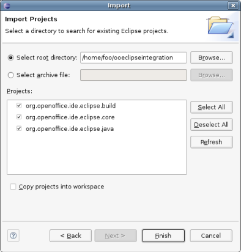

The very first step is to install the needed tools to work. The LibreOffice Eclipse integration development needs:
Eclipse
LibreOffice
LibreOffice SDK
Java JDK
The only important thin to recall is to be sure that the LibreOffice SDK will path will not contain any white space on the windows platform. For more details on the different tools installations, please refer to their official documentation.
After having installed Eclipse and LibreOffice, make sure to
define the OOo Classes user library in the Eclipse
installation. For this, simply select the Window > Preferences menu
in Eclipse and open the Java > Build path > User Library
configuration page. Then add a new library named OOo Classes including the following
jars in the LibreOffice installation. This is necessary in order to correctly build the sources.
The next step is to get the plugins sources as Eclipse projects.
First check the sources from the Git repository using command
git clone git://anongit.freedesktop.org/libreoffice/contrib/ooeclipse.
The second step is to import the sources as Eclipse projects. For this open the File > Import menu and choose General > Existing projects into workspace. Then choose the directory where the sources have been extracted. Three projects should appear in the list as shown by the next illustration. Select them all and click on Finish: the projects are imported in the workspace.
|  |